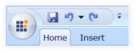
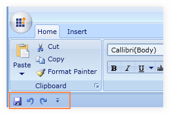
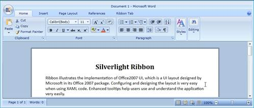
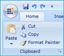
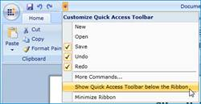
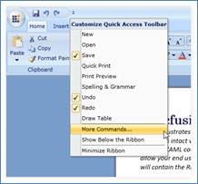
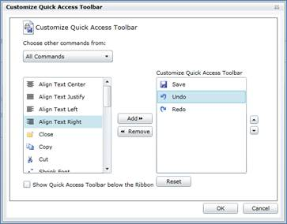

The Quick Access Toolbar class type exposes the following members:
1.1.1.1.1.1.8 Properties
|
Name |
Type |
Value it accepts |
Description |
Default Value |
Reference Link |
|
HasGeometry |
Boolean |
True or False |
Used to Show or Hide Geometry |
true |
|
|
QATMenuItems |
ObservableCollection<RibbonButton> |
Ribbon Button |
Used to Show Menu items in the drop down popup |
- |
Namespace: Syncfusion.Windows.Tools.Controls
Assembly: Syncfusion.Ribbon.Silverlight
Quick Access toolbar in the Ribbon instance is used to group the most commonly used commands and accesses the commands easily by just clicking the item in the Quick Access Toolbar (QAT). QAT can be placed above or below the ribbon.
1.1.1.1.1.1.9 Adding Items to QAT
|
XAML
<syncfusion:Ribbon.QuickAccessToolBar> <syncfusion:QuickAccessToolBar> <syncfusion:RibbonButton SmallIcon="Save.png" SizeMode="Small"/> <syncfusion:RibbonSplitButton SmallIcon="Undo16.png" SizeMode="Small"/> <syncfusion:RibbonButton SmallIcon="Redo16.png" SizeMode="Small"/> </syncfusion:QuickAccessToolBar> </syncfusion:Ribbon.QuickAccessToolBar> |

Figure 523: Quick Access Toolbar
1.1.1.1.1.1.10 Positioning the Quick Access Toolbar
Quick Access Toolbar can be placed above or below the Ribbon using the Tool Bar State property.
The following code snippet explains the implementation.
|
XAML
<syncfusion:Ribbon Title="My Ribbon" Name="myRibbon" QATState="BelowRibbon" /> |

Figure 524: QAT Shown below the Ribbon
1.1.1.1.1.1.11 Hiding Quick Access Toolbar
Quick Access Toolbar can be hidden by setting the Tool Bar State property to Hidden.
|
XAML
<syncfusion:Ribbon Title="My Ribbon" Name="myRibbon" QATState="Hidden">
<syncfusion:Ribbon.QuickAccessToolBar> </syncfusion:Ribbon> |

Figure 525: QAT Hidden
1.1.1.1.1.1.12 Set HasGeometry
|
XAML
<syncfusion:Ribbon Title="My Ribbon" Name="myRibbon" QATState="Hidden">
<syncfusion:Ribbon.QuickAccessToolBar> |

Figure 526: QAT Path disabled
1.1.1.1.1.1.13 Add QAT Menu Items
|
XAML
<syncfusion:Ribbon.QuickAccessToolBar>
<syncfusion:RibbonButton Label="New" Command="{Binding New}" SmallIcon="New.png"/> </syncfusion:QuickAccessToolBar.QATMenuItems> |
|
[C#]
QuickAccessToolBar qat = new QuickAccessToolBar(); rbnbtn.Command = New; rbnbtn.SmallIcon = new BitmapImage(new Uri("New.png", UriKind.RelativeOrAbsolute)); rbnbtn.Command = Open; rbnbtn.Command = Save; rbnbtn.Command = Undo; rbnbtn.Command = Redo;
|

Figure 527: QAT Menu Items
QAT Customization Dialog implementation focused mainly on end-user customization. Using this window the end user can easily customize the QAT. The user can register the custom commands using the Ribbon Command Manager Class, so that the end user can pick the commands from this Dialog.
The QAT Customization Dialog can be shown by clicking the More Commands option as shown in the following screenshot.

Figure 528: QAT Drop Down Items

Figure 529: QAT Customization Dialog
The user can register any n number of commands. For example, the Copy and Cut commands are registered as given below.
|
[C#]
RibbonCommandManager.Register(Copy, new RibbonCommandProvider("Clipboard Commands", "Copy", "Copy16.png","Copy the selection and put it on the Clipboard."));
RibbonCommandManager.Register(Cut, new RibbonCommandProvider ("Clipboard Commands", "Cut", "Cut16.png","Cut the selection from the document and put it on the Clipboard."));
|
See Also: